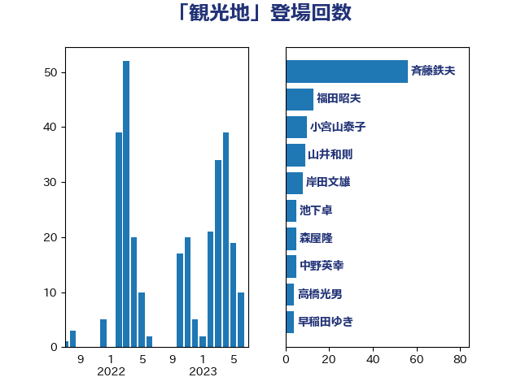

単語「観光地」

| 斉藤鉄夫 | 公明党 | 56 回 |
| 福田昭夫 | 立憲民主党 | 13 回 |
| 小宮山泰子 | 立憲民主党 | 10 回 |
| 山井和則 | 立憲民主党 | 9 回 |
| 岸田文雄 | 自由民主党 | 8 回 |
| 池下卓 | 日本維新の会 | 5 回 |
| 森屋隆 | 立憲民主党 | 5 回 |
| 中野英幸 | 自由民主党 | 5 回 |
| 高橋光男 | 公明党 | 4 回 |
| 早稲田ゆき | 立憲民主党 | 4 回 |
| 小里泰弘 | 自由民主党 | 4 回 |
| 赤羽一嘉 | 公明党 | 3 回 |
| 石井浩郎 | 自由民主党 | 3 回 |
| 池畑浩太朗 | 日本維新の会 | 3 回 |
| 柚木道義 | 立憲民主党 | 3 回 |
| 新垣邦男 | 立憲民主党 | 3 回 |
| 岡田直樹 | 自由民主党 | 3 回 |
| 伊波洋一 | 無所属 | 3 回 |
| 三反園訓 | 無所属 | 3 回 |
| 青山大人 | 立憲民主党 | 2 回 |
| 長妻昭 | 立憲民主党 | 2 回 |
| 西銘恒三郎 | 自由民主党 | 2 回 |
| 紙智子 | 日本共産党 | 2 回 |
| 穂坂泰 | 自由民主党 | 2 回 |
| 神田潤一 | 自由民主党 | 2 回 |
| 河西宏一 | 公明党 | 2 回 |
| 市村浩一郎 | 日本維新の会 | 2 回 |
| 山本佐知子 | 自由民主党 | 2 回 |
| 山岡達丸 | 立憲民主党 | 2 回 |
| 嘉田由紀子 | 無所属 | 2 回 |
| 吉井章 | 自由民主党 | 2 回 |
| 北神圭朗 | 無所属 | 2 回 |
| 三上えり | 立憲民主党 | 2 回 |
| 青木一彦 | 自由民主党 | 1 回 |
| 青山繁晴 | 自由民主党 | 1 回 |
| 阿部知子 | 立憲民主党 | 1 回 |
| 長谷川岳 | 自由民主党 | 1 回 |
| 長浜博行 | 無所属 | 1 回 |
| 長友慎治 | 国民民主党 | 1 回 |
| 鈴木義弘 | 国民民主党 | 1 回 |
| 野田佳彦 | 立憲民主党 | 1 回 |
| 辻清人 | 自由民主党 | 1 回 |
| 赤嶺政賢 | 日本共産党 | 1 回 |
| 谷田川元 | 立憲民主党 | 1 回 |
| 西田実仁 | 公明党 | 1 回 |
| 西村康稔 | 自由民主党 | 1 回 |
| 萩生田光一 | 自由民主党 | 1 回 |
| 菅家一郎 | 自由民主党 | 1 回 |
| 芳賀道也 | 国民民主党 | 1 回 |
| 美延映夫 | 日本維新の会 | 1 回 |
| 窪田哲也 | 公明党 | 1 回 |
| 福重隆浩 | 公明党 | 1 回 |
| 福島伸享 | 無所属 | 1 回 |
| 石井章 | 日本維新の会 | 1 回 |
| 石井啓一 | 公明党 | 1 回 |
| 渡辺猛之 | 自由民主党 | 1 回 |
| 清水貴之 | 日本維新の会 | 1 回 |
| 森田俊和 | 立憲民主党 | 1 回 |
| 杉尾秀哉 | 立憲民主党 | 1 回 |
| 本田太郎 | 自由民主党 | 1 回 |
| 日下正喜 | 公明党 | 1 回 |
| 庄子賢一 | 公明党 | 1 回 |
| 島尻安伊子 | 自由民主党 | 1 回 |
| 山本博司 | 公明党 | 1 回 |
| 山本剛正 | 日本維新の会 | 1 回 |
| 小島敏文 | 自由民主党 | 1 回 |
| 小山展弘 | 立憲民主党 | 1 回 |
| 寺田静 | 無所属 | 1 回 |
| 室井邦彦 | 日本維新の会 | 1 回 |
| 大西健介 | 立憲民主党 | 1 回 |
| 城井崇 | 立憲民主党 | 1 回 |
| 古川康 | 自由民主党 | 1 回 |
| 古川元久 | 国民民主党 | 1 回 |
| 勝部賢志 | 立憲民主党 | 1 回 |
| 加田裕之 | 自由民主党 | 1 回 |
| 佐藤英道 | 公明党 | 1 回 |
| 伊藤孝江 | 公明党 | 1 回 |
| 五十嵐清 | 自由民主党 | 1 回 |
| 中川宏昌 | 公明党 | 1 回 |
| 中山展宏 | 自由民主党 | 1 回 |
| 上月良祐 | 自由民主党 | 1 回 |
| 上川陽子 | 自由民主党 | 1 回 |
| 一谷勇一郎 | 日本維新の会 | 1 回 |
| おおつき紅葉 | 立憲民主党 | 1 回 |